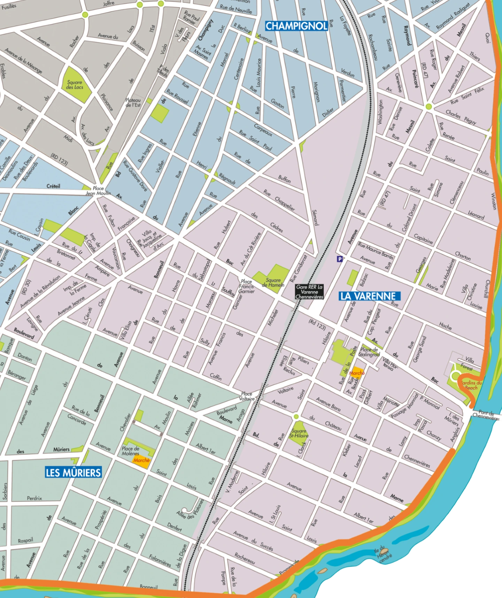
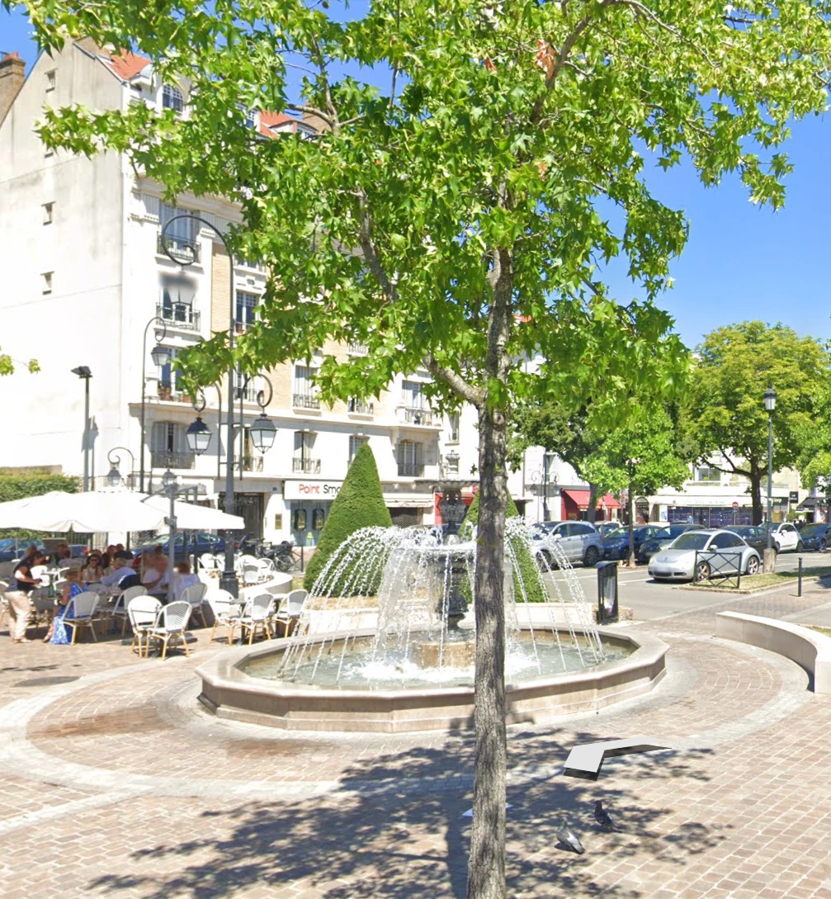
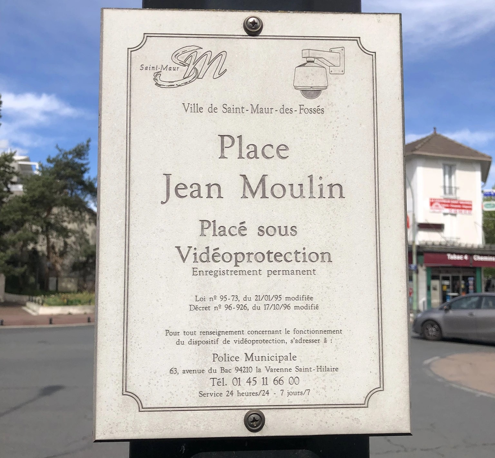
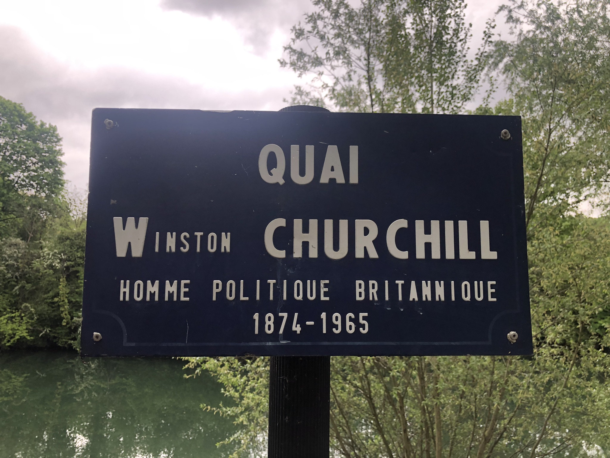

Retour à la carte
Le quartier de La Varenne

la Place de Stalingrad

Découvrez l'histoire de la Place de Stalingrad
la Place Jean Moulin

Découvrez l'histoire de la Place Jean Moulin
le Quai Winston Churchill

Découvrez l'histoire du Quai Winston Churchill